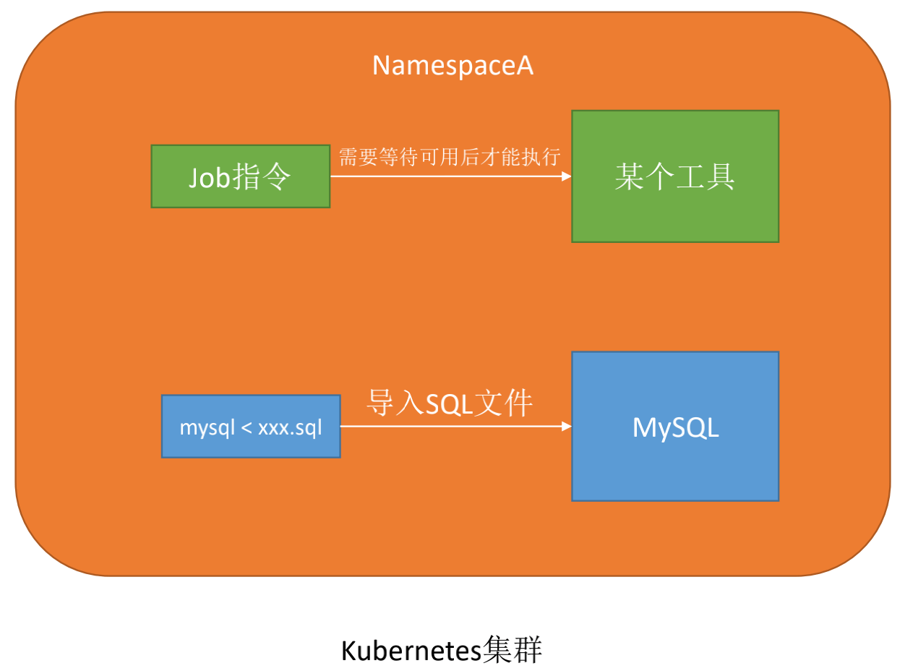
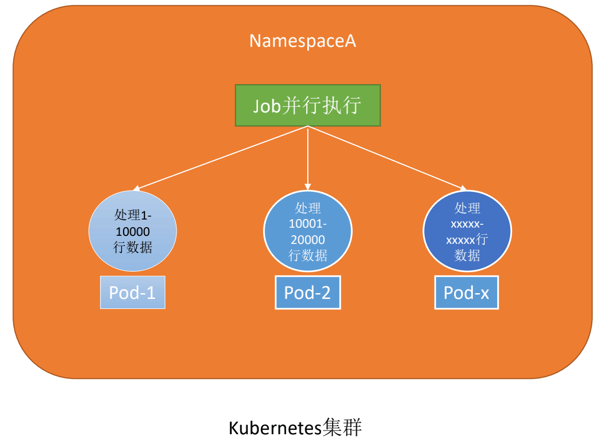
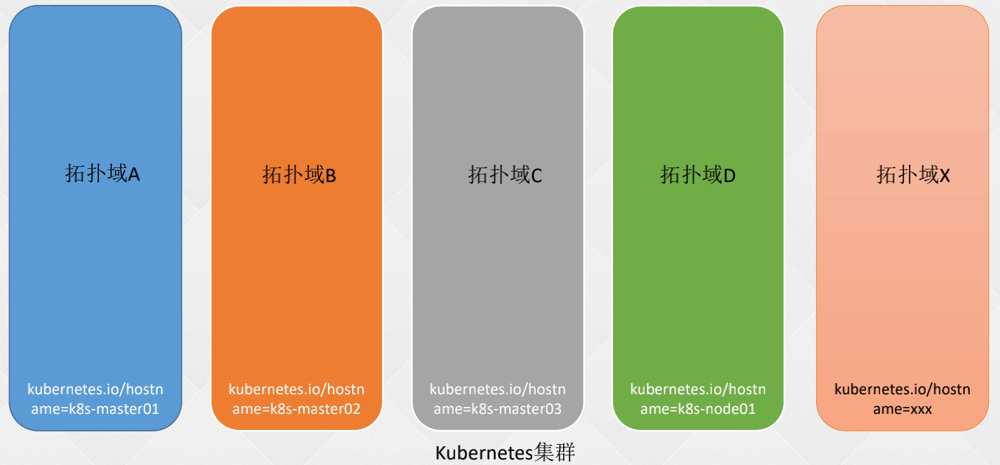
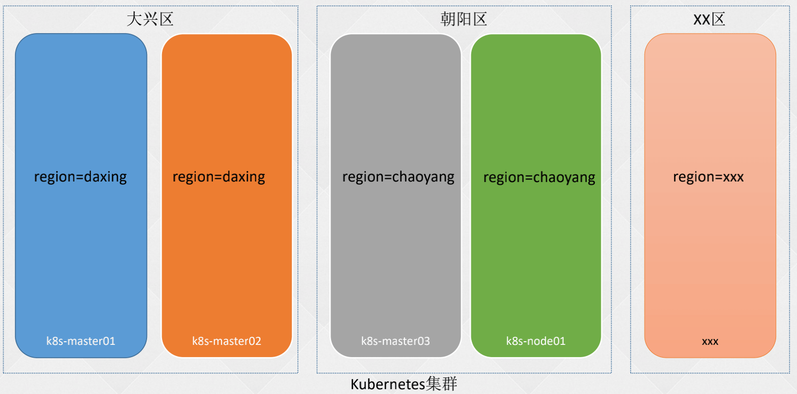
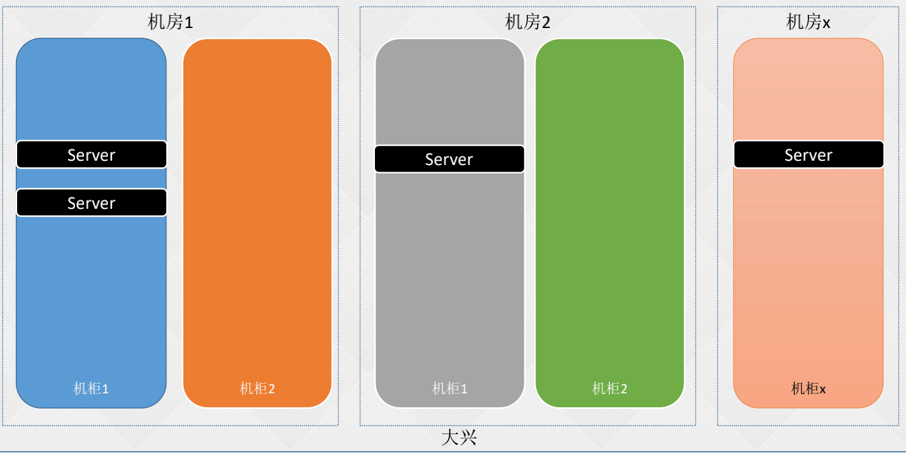

Kubernetes: k8s 进阶篇-高级调度
- TAGS: Kubernetes
进阶篇-高级调度
CronJob
什么是 Job


- 等待可用后才执行
- 并行执行多个 pod，分别执行各自的逻辑
Job 使用
apiVersion: batch/v1
kind: Job
metadata:
name: echo
labels:
job-name: echo
namespace: default
spec:
suspend: true # 1.21+
ttlSecondsAfterFinished: 100
backoffLimit: 4
completions: 1
parallelism: 1
template:
spec:
containers:
- name: echo
image: perl:5.34.0
command: ["perl", "-Mbignum=bpi", "-wle", "print bpi(2000)"]
imagePullPolicy: IfNotPresent
resources: {}
restartPolicy: Never
- suspend：默认 false，马上开始执行 Pod。设置为 true 为挂起状态不执行 pod。
kubectl patch job/xxx --type=strategic --patch '{"spec":{"suspend":false}}'
- backoffLimit: 如果任务执行失败，失败多少次后不再执行
- completions：有多少个Pod执行成功，认为任务是成功的
- 为空默认和parallelism数值一样
- 为空默认和parallelism数值一样
- parallelism：并行执行任务的数量
- 如果parallelism数值大于未完成任务数，只会创建未完成的数量；比如completions是4，并发是3，第一次会创建3个Pod执行任务，第二次只会创建一个Pod执行任务
- 如果parallelism数值大于未完成任务数，只会创建未完成的数量；比如completions是4，并发是3，第一次会创建3个Pod执行任务，第二次只会创建一个Pod执行任务
- ttlSecondsAfterFinished：Job在执行结束之后（状态为completed或Failed）自动清理。设置为0表示执行结束立即删除，不设置则不会清除，需要开启TTLAfterFinished特性
更强大的计划任务 CronJob 介绍
在k8s 里面运行周期性的计划任务，crontab * * * * * 分时日月周 可以利用 CronJobs 执行基于时间调度的任务。这些自动化任务和 Linux 或者 Unix 系统的 Cron 任务类似 CronJobs在创建周期性以及重复性的任务时很有帮助，例如执行备份操作或者发送邮件。CronJobs 也可以在特定时间调度单个任务，例如你想调度低活跃周期的任务。
.spec.schedule 字段是必需的。该字段的值遵循 Cron 语法：
# ┌───────────── 分钟 (0 - 59) # │ ┌───────────── 小时 (0 - 23) # │ │ ┌───────────── 月的某天 (1 - 31) # │ │ │ ┌───────────── 月份 (1 - 12) # │ │ │ │ ┌───────────── 周的某天 (0 - 6)（周日到周六） # │ │ │ │ │ 或者是 sun，mon，tue，web，thu，fri，sat # │ │ │ │ │ # │ │ │ │ │ # * * * * *
CronJob 配置参数
和 Job 配置类似
apiVersion: batch/v1
kind: CronJob
metadata:
name: hello
labels:
run: hell
namespace: default
spec:
concurrencyPolicy: Allow
failedJobsHistoryLimit: 1
jobTemplate:
spec:
ttlSecondsAfterFinished: 64800
template:
metadata:
labels:
run: hello
spec:
containers:
- name: hello
image: busybox:1.28
imagePullPolicy: IfNotPresent
args:
- /bin/sh
- -c
- date; echo Hello from the Kubernetes cluster
resources: {}
restartPolicy: OnFailure
schedule: "*/1 * * * *"
successfulJobsHistoryLimit: 3
suspend: false
参数说明：
- apiVersion: batch/v1beta1 #1.21+ batch/v1
- schedule：调度周期，和Linux一致，分别是分时日月周。
- restartPolicy：重启策略，和Pod一致。
- concurrencyPolicy：并发调度策略。可选参数如下：
- Allow： 默认，允许同时运行多个任务。
- Forbid：不允许并发运行，如果之前的任务尚未完成，新的任务不会被创建。
- Replace：如果之前的任务尚未完成，新的任务会替换的之前的任务。
- Allow： 默认，允许同时运行多个任务。
- suspend：如果设置为true，则暂停后续的任务，默认为false。
- successfulJobsHistoryLimit：保留多少已完成的任务，按需配置。默认为 3
- failedJobsHistoryLimit：保留多少失败的任务。 默认为 1，设置为 0 代表相应类型的任务完成后不会保留。
- jobTemplate.spec.ttlSecondsAfterFinished: Job在执行结束之后（状态为completed或Failed）自动清理。默认不清理。
范例 crontJob mysql 删除表数据
apiVersion: batch/v1
kind: CronJob
metadata:
name: ludo-xxl-job-clean
namespace: ludo
spec:
jobTemplate:
spec:
ttlSecondsAfterFinished: 64800
template:
spec:
containers:
- command:
- /bin/sh
- -c
- echo 操作前总数为：;mysql -h$HOST -P 6033 -u$USER -p$PASSWORD ludo_xxl_job -e 'select count(*)
from xxl_job_log';mysql -h$HOST -P 6033 -u$USER -p$PASSWORD ludo_xxl_job
-e 'delete from xxl_job_log'; echo 操作后总数为：;mysql -h$HOST -P 6033 -u$USER -p$PASSWORD
ludo_xxl_job -e 'select count(*) from xxl_job_log'
env:
- name: HOST
value: nlbxxx.elb.ap-south-1.amazonaws.com
- name: USER
value: xxl_job
- name: PASSWORD
value: FfVFSj/fdUCRYZ8Y
image: mysql:5.7
imagePullPolicy: Always
name: ludo-xxl-job-clean
nodeSelector:
type: prod-app
restartPolicy: OnFailure
schedule: "58 1 * * *"
自动清理
ttlSecondsAfterFinished: 64800 每 12 小时清理一次
查看job
[root@k8s-master01 app]# kubectl get cj hello NAME SCHEDULE SUSPEND ACTIVE LAST SCHEDULE AGE hello */1 * * * * False 6 4s 8m20s # 删除 [root@k8s-master01 app]# kubectl delete cronjob hello cronjob.batch "hello" deleted
范例：定时重启服务
--- apiVersion: v1 kind: ServiceAccount metadata: name: deployment-restart namespace: default --- apiVersion: rbac.authorization.k8s.io/v1 kind: Role metadata: name: deployment-restart namespace: default rules: - apiGroups: ["apps", "extensions"] resources: ["deployments"] resourceNames: ["singapore-report"] verbs: ["get", "patch", "list", "watch"] - apiGroups: [""] resources: ["pods"] verbs: ["get", "patch","delete","list", "watch"] --- apiVersion: rbac.authorization.k8s.io/v1 kind: RoleBinding metadata: name: deployment-restart namespace: default roleRef: apiGroup: rbac.authorization.k8s.io kind: Role name: deployment-restart subjects: - kind: ServiceAccount name: deployment-restart namespace: default --- apiVersion: batch/v1 kind: CronJob metadata: name: deployment-restart namespace: default spec: concurrencyPolicy: Forbid schedule: '0 0 * * 0' #周日0点 jobTemplate: spec: ttlSecondsAfterFinished: 64800 backoffLimit: 2 activeDeadlineSeconds: 900 # 增加超时时间以应对复杂情况 template: spec: serviceAccountName: deployment-restart restartPolicy: OnFailure containers: - name: kubectl image: bitnami/kubectl:latest command: - /bin/bash - -c - >- which kubectl; kubectl version ; kubectl rollout restart deployment singapore-report ; pod_names=`kubectl get po --field-selector 'status.phase=Failed' |sed '1d'|awk '{print $1}'` ; if [ -n "$pod_names" ]; then for p in ${pod_names};do echo delete $p ; kubectl delete po $p ; done ; else echo 'Nothing to do' ; fi # volumeMounts: # - name: script-volume # mountPath: /etc/script # volumes: # - name: script-volume # configMap: # name: restart-script-cm --- apiVersion: v1 kind: ConfigMap metadata: name: restart-script-cm namespace: default data: restart-script: | #!/bin/bash #kubectl --kubeconfig=/tmp/.confg rollout restart deployment/my-deployment which kubectl kubectl version cat /tmp/.config ---
InitContainer介绍
初始化容器的用途
- Init 容器可以包含一些安装过程中应用容器中不存在的实用工具或个性化代码；
- Init 容器可以安全地运行这些工具，避免这些工具导致应用镜像的安全性降低；
- Init容器可以以root身份运行，执行一些高权限命令；
- Init容器相关操作执行完成以后即退出，不会给业务容器带来安全隐患。
在主应用启动之前，做一些初始化的操作，比如创建文件、修改内核参数、等待依赖程序启动或其他需要在主程序启动之前需要做的工作
初始化容器和普通容器、PostStart 区别
初始化容器和PostStart区别：
- PostStart：依赖主应用的环境，而且并不一定先于Command运行
- InitContainer：不依赖主应用的环境，可以有更高的权限和更多的工具，一定会在主应用启动之前完成
初始化容器和普通容器的区别：
Init 容器与普通的容器非常像，除了如下几点：
- 它们总是运行到完成；
- 上一个运行完成才会运行下一个；
- 如果 Pod 的 Init 容器失败，Kubernetes 会不断地重启该 Pod，直到 Init 容器成功为止，但是Pod 对应的 restartPolicy 值为 Never，Kubernetes 不会重新启动 Pod。
- Init 容器不支持 lifecycle、livenessProbe、readinessProbe 和 startupProbe
什么是Init Container
Init Container就是用来做初始化工作的容器，可以是一个或者多个，如果有多个的话，这些容器会按定义的顺序依次执行，只有所有的Init Container执行完后，主容器才会被启动。我们知道一个Pod里面的所有容器是共享数据卷和网络命名空间的，所以Init Container里面产生的数据可以被主容器使用到的。
Init Container与应用容器本质上是一样的，但他们是仅运行一次就结束的任务，并且必须在成功执行完后，系统才能继续执行下一个容器
初始化容器配置解析
- initContainers 和 containers 、volumes 是同级的。
- 修改目录权限时一定要把目录挂载起来
初始化容器使用示例
apiVersion: apps/v1
kind: Deployment
metadata:
labels:
app: test-init
name: test-init
namespace: default
spec:
replicas: 3
selector:
matchLabels:
app: test-init
template:
metadata:
labels:
app: test-init
spec:
volumes:
- name: data
emptyDir: {}
initContainers:
- command:
- sh
- -c
- touch /mnt/test-init.txt
image: nginx
imagePullPolicy: IfNotPresent
name: init-touch
volumeMounts:
- name: data
mountPath: /mnt
- command:
- sh
- -c
- for i in `seq 1 100`; do echo $i; sleep 1; done
image: nginx
imagePullPolicy: IfNotPresent
name: echo
containers:
- image: nginx
imagePullPolicy: IfNotPresent
name: test-init
volumeMounts:
- name: data
mountPath: /mnt
查看 pod 容器的日志，先 `describe` 看哪个初始化容器没执行完，使用 `logs`查看
kubectl logs -f test-init-7c58ff4db4-dbhrx -c echo 1 2 3
临时容器
为什么要用临时容器
从镜像的角度探讨容器的安全
- 容器中有 bash 或 sh ，通过渗透可以注入 sidecar 当矿机
- 不要以 root 身份的运行 pod，不会安装一些工具包
容器没有 root 权限或者一些工具命令，程序出问题时不好排查。
临时容器
- shareProcessNamespace 默认是打开的
在 pod 中注入临时容器：
- 有 root 权限
- 有 debug 工具
开启临时容器
二进制修改方式
# master 节点 vi /usr/lib/systemd/system/kube-apiserver.service --feature-gates=EphemeralContainers=true vi /usr/lib/systemd/system/kube-controller-manager.service --feature-gates=EphemeralContainers=true vi /usr/lib/systemd/system/kube-scheduler.service --feature-gates=EphemeralContainers=true # node 节点 vi /usr/lib/systemd/system/kube-proxy.service --feature-gates=EphemeralContainers=true vi /etc/kubernetes/kubelet-conf.yml featureGates: EphemeralContainers: true # 重启所有服务 systemctl daemon-reload systemctl restart kube-apiserver kube-scheduler kube-controller-mannager kubelet kube-proxy # 判断是否生效方法：配置好了，能使用命令插件临时容器说明是可以的
使用临时容器在线 debug
临时容器使用
K8s 1.16+ https://kubernetes.io/docs/concepts/workloads/pods/ephemeral-containers/
K8s 1.18+ `kubectl alpha debug redis-new-5b577b46c7-2jv4j -ti –image=registry.cn-beijing.aliyuncs.com/dotbalo/debug-tools`
K8s 1.20+ `kubectl debug redis-new-5b577b46c7-2jv4j -ti –image=registry.cn-beijing.aliyuncs.com/dotbalo/debug-tools`
`kubectl debug node/k8s-node01 -it –image=registry.cn-beijing.aliyuncs.com/dotbalo/debug-tools`
]$ kubectl exec -it stg-prometheus-kube-state-metrics-598bc78c87-j6cpc bash kubectl exec [POD] [COMMAND] is DEPRECATED and will be removed in a future version. Use kubectl exec [POD] -- [COMMAND] instead. OCI runtime exec failed: exec failed: container_linux.go:380: starting container process caused: exec: "bash": executable file not found in $PATH: unknown command terminated with exit code 126 ]$ kubectl exec -it stg-prometheus-kube-state-metrics-598bc78c87-j6cpc sh kubectl exec [POD] [COMMAND] is DEPRECATED and will be removed in a future version. Use kubectl exec [POD] -- [COMMAND] instead. OCI runtime exec failed: exec failed: container_linux.go:380: starting container process caused: exec: "sh": executable file not found in $PATH: unknown command terminated with exit code 126 kubectl debug stg-prometheus-kube-state-metrics-598bc78c87-j6cpc -it --image=busybox # 如果上面终端卡死可以使用 exec 进入容器 kubectl exec -it podName -c containName -- bash
json 方式临时容器
临时容器：一种特殊的容器，该容器在现有 [Pod](https://kubernetes.io/docs/concepts/workloads/pods/pod-overview/) 中临时运行，以便完成用户发起的操作，例如故障排查。 你会使用临时容器来检查服务，而不是用它来构建应用程序。
临时容器与其他容器的不同之处在于，它们缺少对资源或执行的保证，并且永远不会自动重启， 因此不适用于构建应用程序。 临时容器使用与常规容器相同的 ContainerSpec 节来描述，但许多字段是不兼容和不允许的。
- 临时容器没有端口配置，因此像 ports，livenessProbe，readinessProbe 这样的字段是不允许的。
- Pod 资源分配是不可变的，因此
resources配置是不允许的。 - 有关允许字段的完整列表，请参见 [EphemeralContainer 参考文档](https://kubernetes.io/docs/reference/generated/kubernetes-api/v1.21/#ephemeralcontainer-v1-core)。
临时容器是使用 API 中的一种特殊的 ephemeralcontainers 处理器进行创建的， 而不是直接添加到 pod.spec 段，因此无法使用 kubectl edit 来添加一个临时容器。
与常规容器一样，将临时容器添加到 Pod 后，将不能更改或删除临时容器。
临时容器是使用 Pod 的 ephemeralcontainers 子资源创建的，可以使用 kubectl --raw 命令进行显示。 首先描述临时容器被添加为一个 EphemeralContainers 列表：
{
"apiVersion": "v1",
"kind": "EphemeralContainers",
"metadata": {
"name": "example-pod"
},
"ephemeralContainers": [{
"command": [
"sh"
],
"image": "busybox",
"imagePullPolicy": "IfNotPresent",
"name": "debugger",
"stdin": true,
"tty": true,
"terminationMessagePolicy": "File"
}]
}
使用如下命令更新已运行的临时容器 =example-pod=：
kubectl replace --raw /api/v1/namespaces/default/pods/example-pod/ephemeralcontainers -f ec.json
这将返回临时容器的新列表：
{
"kind":"EphemeralContainers",
"apiVersion":"v1",
"metadata":{
"name":"example-pod",
"namespace":"default",
"selfLink":"/api/v1/namespaces/default/pods/example-pod/ephemeralcontainers",
"uid":"a14a6d9b-62f2-4119-9d8e-e2ed6bc3a47c",
"resourceVersion":"15886",
"creationTimestamp":"2019-08-29T06:41:42Z"
},
"ephemeralContainers":[
{
"name":"debugger",
"image":"busybox",
"command":[
"sh"
],
"resources":{
},
"terminationMessagePolicy":"File",
"imagePullPolicy":"IfNotPresent",
"stdin":true,
"tty":true
}
]
}
可以使用以下命令查看新创建的临时容器的状态：
kubectl describe pod example-pod
输出为：
...
Ephemeral Containers:
debugger:
Container ID: docker://cf81908f149e7e9213d3c3644eda55c72efaff67652a2685c1146f0ce151e80f
Image: busybox
Image ID: docker-pullable://busybox@sha256:9f1003c480699be56815db0f8146ad2e22efea85129b5b5983d0e0fb52d9ab70
Port: <none>
Host Port: <none>
Command:
sh
State: Running
Started: Thu, 29 Aug 2019 06:42:21 +0000
Ready: False
Restart Count: 0
Environment: <none>
Mounts: <none>
...
可以使用以下命令连接到新的临时容器：
kubectl attach -it example-pod -c debugger
污点Taint和容忍Toleration
容忍和污点Taint和Toleration 设计理念
生产环境的调度并非随便
- Master节点：其他类型的 Pod 不要部署到我身上
- Kube-Proxy, Kube-ControllerManager, Kube-APIServer, Calico, Metrics-Server, Dashboard
- Kube-Proxy, Kube-ControllerManager, Kube-APIServer, Calico, Metrics-Server, Dashboard
- 新增节点：我还没有经过完整的可用性测试，不能部署 Pod 到我身上
- 维护节点：我要进行维护/升级了，需要将 Pod 提前迁移到其他节点
- 特殊节点（SSD/GPU）：我很昂贵，不能随便一个 Pod 都能部署到我身上
容忍和污点Taint和Toleration
设计理念：Taint 在一类服务器上打上污点，让不能容忍这个污点的 Pod 不能部署在打了污点的服务器上，类似给节点加了锁。Toleration 是让 Pod 容忍节点上配置的污点，可以让一些需要特殊配置的 Pod 能够调用到具有污点和特殊配置的节点上，类似给节点加钥匙。
官 方 文 档 ：https://kubernetes.io/docs/concepts/scheduling-eviction/taint-and-toleration/
所谓污点就是故意给某个节点服务器上设置个污点参数，那么你就能让生成pod的时候使用相应的参数去避开有污点参数的node服务器。而容忍呢，就是当资源不够用的时候，即使这个node服务器上有污点，那么只要pod的yaml配置文件中写了容忍参数，最终pod还是会容忍的生成在该污点服务器上。默认master节点是NoSchedule
污点和容忍配置解析
污点(Taint)配置解析
创建一个污点（一个节点可以有多个污点）：
使用kubectl taint命令可以给某个Node节点设置污点，Node被设置上污点之后就和Pod之间存在了一种相斥的关系，可以让Node拒绝Pod的调度执行，甚至将Node已经存在的Pod驱逐出去。key=value:effect
kubectl taint nodes NODE_NAME TAINT_KEY=TAINT_VALUE:EFFECT 比如： kubectl taint nodes k8s-node01 ssd=true:PreferNoSchedule
每个污点有一个key和value作为污点的标签，其中value可以为空，effect描述污点的作用。当前taint effect支持如下三个选项：
- NoSchedule：禁止调度到该节点，已经在该节点上的Pod不受影响
- NoExecute：禁止调度到该节点，如果不符合这个污点，会立马被驱逐（或在一段时间后）
- PreferNoSchedule：尽量避免将Pod调度到指定的节点上，如果没有更合适的节点，可以部署到该节点
去除污点NoSchedule，最后一个"-"代表删除：
kubectl taint nodes k8s-master02 node-role.kubernetes.io/master:NoSchedule-
查看某个节点的Taint配置情况：
]# kubectl describe node k8s-node01 (内容太多不贴全了) Taints: <none> # 关注这个地方即可 ---没有设置过污点的节点属性中的参数是这样的Taints: <none>
- 节点的Taint设置样例
- Master节点：其他类型的 Pod 不要部署到我身上
- node-role.kubernetes.io/master:NoSchedule
- node-role.kubernetes.io/master:NoSchedule
- 新增节点：我还没有经过完整的可用性测试，不能部署 Pod 到我身上
- node-role.kubernetes.io/new-node:NoExecute
- node-role.kubernetes.io/maintain:NoExecute
- node-role.kubernetes.io/new-node:NoExecute
- 维护节点：我要进行维护/升级了，需要将 Pod 提前迁移到其他节点
- node-role.kubernetes.io/new-node: NoSchedule
- node-role.kubernetes.io/new-node: NoSchedule
- 特殊节点（SSD/GPU）：我很昂贵，不能随便一个 Pod 都能部署到我身上
- node-role.kubernetes.io/ssd:PreferNoSchedule
- node-role.kubernetes.io/ssd:PreferNoSchedule
- Master节点：其他类型的 Pod 不要部署到我身上
Toleration 配置解析
Toleration 配置在 Pod 中
方式一完全匹配：
tolerations: - key: "key" operator: "Equal" value: "value" effect: "NoSchedule"
方式二不完全匹配：
tolerations: - key: "key" operator: "Exists" effect: "NoSchedule"
一个Toleration和一个Taint相匹配是指它们有一样的key和effect，并且如果operator是Exists（此时toleration不指定value）或者operator是Equal，则它们的value应该相等。
方式三大范围匹配（不推荐key为内置Taint）：
如果一个 Toleration 的 effect 为空，则 key 与之相同的相匹配的 Taint 的 effect 可以是任意值：
tolerations: - key: "key" operator: "Exists"
方式四匹配所有（不推荐）：
如果一个Toleration的key为空且operator为Exists，表示这个Toleration与任意的key、value和effect都匹配，即这个Toleration能容忍任意的Taint：
tolerations: - operator: "Exists"
停留时间配置：
tolerations: - key: "key1" operator: "Equal" value: "value1" effect: "NoExecute" tolerationSeconds: 3600 # 在 3600 秒后 pod 被驱逐
Kubernetes会自动给Pod添加一个key为node.kubernetes.io/not-ready的Toleration并配置tolerationSeconds=300，同样也会给Pod添加一个key为node.kubernetes.io/unreachable的Toleration并配置tolerationSeconds=300，除非用户自定义了上述key，否则会采用这个默认设置。
Taint 和 nodeSelector 区别：
- nodeSelector 是强制性的 pod 在指定节点上
- toleration 不是强制指定节点而附加允许的操作；调度到这个加污点的节点上了就匹配是否可以容忍，调度到没加污点的节点上 pod 有没有容忍都可以部署。如果想指定节点要用 nodeSelector 或者 Affinity 实现。
污点和容忍配置解析示例
有一个节点是纯SSD硬盘的节点，现需要只有一些需要高性能存储的Pod才能调度到该节点上
给节点打上污点和标签：
1. kubectl taint nodes k8s-node01 ssd=true:NoExecute（此时会驱逐没有容忍该污点的Pod） 2. kubectl taint nodes k8s-node01 ssd=true:NoSchedule 3. kubectl label node k8s-node01 ssd=true
配置 deplyment nginx：
apiVersion: apps/v1
kind: Deployment
metadata:
labels:
app: nginx
name: nginx
spec:
replicas: 2
selector:
matchLabels:
app: nginx
template:
metadata:
labels:
app: nginx
spec:
containers:
- image: nginx:1.15.12
name: nginx
nodeSelector:
ssh: "true"
tolerations:
- key: "ssd"
operator: "Exists"
范例：deployment
# node 污点 kubectl taint nodes k8s-node02 ludo=staging:NoExecute # deploy template: metadata: annotations: prometheus.io/scrape: 'true' prometheus.io/path: '/actuator/prometheus' prometheus.io/port: '10082' labels: department: taskcenter app: task-center-job env: prod spec: nodeSelector: type: ludo-staging-app tolerations: - key: "ludo" operator: "Exists" terminationGracePeriodSeconds: 90 affinity: podAntiAffinity: preferredDuringSchedulingIgnoredDuringExecution: - podAffinityTerm: labelSelector: matchLabels: app: task-center-job namespaces: - taskcenter topologyKey: kubernetes.io/hostname weight: 1
damonset 在任意节点运行
spec:
tolerations:
- effect: NoSchedule
operator: "Exists"
- effect: NoExecute
operator: "Exists"
内置污点
k8s 节点出现问题时 pod 飘移走就是因为自动打了污点：
- node.kubernetes.io/not-ready：节点未准备好，相当于节点状态Ready的值为False。
- node.kubernetes.io/unreachable：Node Controller访问不到节点，相当于节点状态Ready的值为Unknown。
- node.kubernetes.io/out-of-disk：节点磁盘耗尽。
- node.kubernetes.io/out-of-disk：节点磁盘耗尽。
- node.kubernetes.io/memory-pressure：节点存在内存压力。
- node.kubernetes.io/disk-pressure：节点存在磁盘压力。
- node.kubernetes.io/network-unavailable：节点网络不可达。
- node.kubernetes.io/unschedulable：节点不可调度。
- node.cloudprovider.kubernetes.io/uninitialized：如果Kubelet启动时指定了一个外部的cloudprovider，它将给当前节点添加一个Taint将其标记为不可用。在cloud-controller-manager的一个controller初始化这个节点后，Kubelet将删除这个Taint。
k8s 为 pod 自动注入容忍。当节点不健康，pod 6000秒后再驱逐（默认是300秒）：
tolerations: - key: "node.kubernetes.io/unreachable" operator: "Exists" effect: "NoExecute" tolerationSeconds: 6000
节点不健康的检查间隔由 controller manager 的 `–node_monitor-period=5s` 探测间隔和 `–node-monitor-grace-period=40s` 标记不可用来控制。
pod 的飘移时间为大于 `40+5+pod tolerationSeconds`
实现节点宕机快速迁移服务
apiVersion: apps/v1
kind: Deployment
metadata:
labels:
app: nginx
name: nginx
spec:
replicas: 2
selector:
matchLabels:
app: nginx
template:
metadata:
labels:
app: nginx
spec:
containers:
- image: nginx:1.15.12
name: nginx
nodeSelector:
ssh: "true"
tolerations:
- key: ssd
operator: Equal
value: "true"
- effect: NoExecute
key: node.kubernetes.io/unreachable
operator: Exists
tolerationSeconds: 10
- effect: NoExecute
key: node.kubernetes.io/not-ready
operator: Exists
tolerationSeconds: 10
Taint 命令入门
创建一个污点（一个节点可以有多个污点）：
kubectl taint nodes NODE_NAME TAINT_KEY=TAINT_VALUE:EFFECT 比如： kubectl taint nodes k8s-node01 ssd=true:PreferNoSchedule
查看一个节点的污点：
kubectl get node k8s-node01 -o go-template --template {{.spec.taints}}
kubectl describe node k8s-node01 | grep Taints -A 10
删除污点（和label类似）：
基于Key删除： kubectl taint nodes k8s-node01 ssd- 基于Key+Effect删除： kubectl taint nodes k8s-node01 ssd:PreferNoSchedule-
修改污点（Key和Effect相同）：
kubectl taint nodes k8s-node01 ssd=true:PreferNoSchedule --overwrite
Affinity 亲和力
生产环境依旧存在高可用率问题
Pod和节点之间的关系：
- 某些Pod优先选择有ssd=true标签的节点，如果没有在考虑部署到其它节点；nodeSelector 因为是强制指定所以满足不了
- 某些Pod需要部署在ssd=true和type=physical的节点上，但是优先部署在ssd=true的节点上；
Pod和Pod之间的关系：
- 同一个应用的Pod不同的副本或者同一个项目的应用尽量或必须不部署在同一个节点或者符合某个标签的一类节点上或者不同的区域；（反亲和力）
- 相互依赖的两个Pod尽量或必须部署在同一个节点上或者同一个域内。（亲和力）
Affinity亲和力可以帮忙我们解决这些问题。
Affinity 分类
Affinity 亲和力：
- NodeAffinity：节点亲和力/反亲和力
- PodAffinity：Pod亲和力
- PodAntiAffinity：Pod反亲和力
Affinity 亲和力：
- NodeAffinity：
- requiredDuringSchedulingIgnoredDuringExecution（硬亲和力）
- preferredDuringSchedulingIgnoredDuringExecution（软亲和力）
- requiredDuringSchedulingIgnoredDuringExecution（硬亲和力）
- PodAffinity & PodAntiAffinity：：
- requiredDuringSchedulingIgnoredDuringExecution （硬亲和力）
- preferredDuringSchedulingIgnoredDuringExecution（软亲和力）
- requiredDuringSchedulingIgnoredDuringExecution （硬亲和力）
提升可用性
- 部署在不同的宿主机上
- 部署在不同机房
- 尽量把同项目中不同的服务部署到不同的节点上，避免单节点挂掉影响范围大问题。
节点亲和力配置
apiVersion: v1
kind: Pod
metadata:
name: with-affinity-anti-affinity
spec:
affinity:
nodeAffinity:
requiredDuringSchedulingIgnoredDuringExecution:
nodeSelectorTerms:
- matchExpressions:
- key: kubernetes.io/os
operator: In
values:
- linux
preferredDuringSchedulingIgnoredDuringExecution:
- weight: 1
preference:
matchExpressions:
- key: label-1
operator: In
values:
- key-1
- weight: 50
preference:
matchExpressions:
- key: label-2
operator: In
values:
- key-2
containers:
- name: with-node-affinity
image: k8s.gcr.io/pause:2.0
配置说明：
- requiredDuringSchedulingIgnoredDuringExecution：硬亲和力配置
- nodeSelectorTerms：节点选择器配置，可以配置多个matchExpressions（满足其一），每个matchExpressions下可以配置多个key、value类型的选择器（都需要满足），其中values可以配置多个（满足其一）
- nodeSelectorTerms：节点选择器配置，可以配置多个matchExpressions（满足其一），每个matchExpressions下可以配置多个key、value类型的选择器（都需要满足），其中values可以配置多个（满足其一）
- preferredDuringSchedulingIgnoredDuringExecution：软亲和力配置
- weight：软亲和力的权重，权重越高优先级越大，范围1-100
- preference：软亲和力配置项，和weight同级，可以配置多个，matchExpressions和硬亲和力一致
- weight：软亲和力的权重，权重越高优先级越大，范围1-100
- operator：标签匹配的方式
- In：相当于key = value的形式
- NotIn：相当于key != value的形式
- Exists：节点存在label的key为指定的值即可，不能配置values字段。
- DoesNotExist：节点不存在label的key为指定的值即可，不能配置values字段。如部署在没有 GPU key 标签的节点
- Gt：大于value指定的值
- Lt：小于value指定的值
- In：相当于key = value的形式
范例：node 软硬亲和性联合
]# cat node_affinity.yaml
apiVersion: apps/v1
kind: Deployment
metadata:
name: node-affinity-deploy
labels:
app: nodeaffinity-deploy
spec:
replicas: 5
selector:
matchLabels:
app: myapp
template:
metadata:
labels:
app: myapp
spec:
containers:
- name: myapp-pod
image: registry.cn-beijing.aliyuncs.com/google_registry/myapp:v1
imagePullPolicy: IfNotPresent
ports:
- containerPort: 80
affinity:
nodeAffinity:
requiredDuringSchedulingIgnoredDuringExecution:
nodeSelectorTerms:
# 表示node标签存在 cpu-num且值大于10
- matchExpressions:
- key: cpu-num
operator: Gt
values:
- "10"
preferredDuringSchedulingIgnoredDuringExecution:
- weight: 50
preference:
matchExpressions:
# 表示node标签存在 disk-type=ssd 或 disk-type=sas
- key: disk-type
operator: In
values:
- ssd
- sas
Pod 亲和力和反亲和力配置
apiVersion: apps/v1
kind: Deployment
metadata:
name: web-server
spec:
selector:
matchLabels:
app: web-store
replicas: 3
template:
metadata:
labels:
app: web-store
spec:
affinity:
podAffinity:
requiredDuringSchedulingIgnoredDuringExecution:
- labelSelector:
matchExpressions:
- key: app
operator: In
values:
- store
topologyKey: failure-domain.beta.kubernetes.io/zone
podAntiAffinity:
preferredDuringSchedulingIgnoredDuringExecution:
- weight: 100
podAffinityTerm:
labelSelector:
matchExpressions:
- key: security
operator: In
values:
- S2
namespaces:
- default
topologyKey: failure-domain.beta.kubernetes.io/zone
- weight: 10
podAffinityTerm:
labelSelector:
matchLabels:
app: ludo-user
namespaces:
- default
topologyKey: failure-domain.beta.kubernetes.io/zone
requiredDuringSchedulingIgnoredDuringExecution:
- labelSelector:
matchExpressions:
- key: app
operator: In
values:
- canal-admin
namespaces:
- default
topologyKey: kubernetes.io/hostname
containers:
- name: web-app
image: nginx:1.16-alpine
配置说明:
- requiredDuringSchedulingIgnoredDuringExecution：硬亲和力配置
- labelSelector：Pod选择器配置，可以配置多个
- topologyKey：匹配的拓扑域的key，也就是节点上label的key，key和value相同的为同一个域，可以用于标注不同的机房和地区
- namespaces: 和哪个命名空间的Pod进行匹配，空 或者没有 namespaceSelector 为当前命名空间
- namespaceSelector：空
{}为所有名称空间
- labelSelector：Pod选择器配置，可以配置多个
- preferredDuringSchedulingIgnoredDuringExecution：软亲和力配置
- weight：软亲和力的权重，权重越高优先级越大，范围1-100
- podAffinityTerm：软亲和力配置项，和weight同级
- labelSelector：Pod选择器配置
- topologyKey：匹配的拓扑域的key，也就是节点上label的key，key和value相同的为同一个域，可以用于标注不同的机房和地区
- namespaces: 和哪个命名空间的Pod进行匹配，空 或者没有 namespaceSelector 为当前命名空间
- namespaceSelector：空`{}`为所有名称空间
- labelSelector：Pod选择器配置
- weight：软亲和力的权重，权重越高优先级越大，范围1-100
- matchExpressions：和节点亲和力配置一致
- operator：配置和节点亲和力一致，但是没有Gt和Lt
与节点亲和性一样，当前有Pod亲和性/反亲和性都有两种类型，称为requiredDuringSchedulingIgnoredDuringExecution和 preferredDuringSchedulingIgnoredDuringExecution，分别表示“硬”与“软”要求。对于硬要求，如果不满足则pod会一直处于Pending状态。
Pod的亲和性与反亲和性是基于Node节点上已经运行pod的标签(而不是节点上的标签)决定的，从而约束哪些节点适合调度你的pod。
规则的形式是：如果X已经运行了一个或多个符合规则Y的pod，则此pod应该在X中运行(如果是反亲和的情况下，则不应该在X中运行）。当然pod必须处在同一名称空间，不然亲和性/反亲和性无作用。从概念上讲，X是一个拓扑域。我们可以使用topologyKey来表示它，topologyKey 的值是node节点标签的键以便系统用来表示这样的拓扑域。当然这里也有个隐藏条件，就是node节点标签的键值相同时，才是在同一拓扑域中；如果只是节点标签名相同，但是值不同，那么也不在同一拓扑域。★★★★★
也就是说：Pod的亲和性/反亲和性调度是根据拓扑域来界定调度的，而不是根据node节点。★★★★★
注意事项
1、pod之间亲和性/反亲和性需要大量的处理，这会明显降低大型集群中的调度速度。不建议在大于几百个节点的集群中使用它们。
2、Pod反亲和性要求对节点进行一致的标记。换句话说，集群中的每个节点都必须有一个匹配topologyKey的适当标签。如果某些或所有节点缺少指定的topologyKey标签，可能会导致意外行为。
requiredDuringSchedulingIgnoredDuringExecution中亲和性的一个示例是“将服务A和服务B的Pod放置在同一区域【拓扑域】中，因为它们之间有很多交流”；preferredDuringSchedulingIgnoredDuringExecution中反亲和性的示例是“将此服务的 pod 跨区域【拓扑域】分布”【此时硬性要求是说不通的，因为你可能拥有的 pod 数多于区域数】。
Pod亲和性/反亲和性语法支持以下运算符：In，NotIn，Exists，DoesNotExist。
原则上，topologyKey可以是任何合法的标签键。但是，出于性能和安全方面的原因，topologyKey有一些限制：
1、对于Pod亲和性，在requiredDuringSchedulingIgnoredDuringExecution和preferredDuringSchedulingIgnoredDuringExecution中topologyKey都不允许为空。
2、对于Pod反亲和性，在requiredDuringSchedulingIgnoredDuringExecution和preferredDuringSchedulingIgnoredDuringExecution中topologyKey也都不允许为空。
3、对于requiredDuringSchedulingIgnoredDuringExecution的pod反亲和性，引入了允许控制器LimitPodHardAntiAffinityTopology来限制topologyKey的kubernet.io/hostname。如果你想让它对自定义拓扑可用，你可以修改许可控制器，或者干脆禁用它。
4、除上述情况外，topologyKey可以是任何合法的标签键。
Pod 间亲和通过 PodSpec 中 affinity 字段下的 podAffinity 字段进行指定。而 pod 间反亲和通过 PodSpec 中 affinity 字段下的 podAntiAffinity 字段进行指定。
Pod亲和性/反亲和性的requiredDuringSchedulingIgnoredDuringExecution所关联的matchExpressions下有多个key列表，那么只有当所有key满足时，才能将pod调度到某个区域【针对Pod硬亲和】。
deployment 示例
spec:
affinity:
podAntiAffinity:
preferredDuringSchedulingIgnoredDuringExecution:
- podAffinityTerm:
labelSelector:
matchLabels:
app: xx-1
namespaces:
- xx
topologyKey: kubernetes.io/hostname
weight: 1
范例
范例-实现同一个应用分布在不同缩主机
准备节点池
# 检查节点是否有污点 kubectl describe node |grep Taint # kubectl taint node k8s-node01 ssd- # 删除污点 # 节点添加标签，--overwrite覆盖已存在的标签信息 kubectl label nodes k8s-node01 type=app-prod --overwrite
pod 反亲和
apiVersion: apps/v1
kind: Deployment
metadata:
labels:
app: must-be-diff-nodes
name: must-be-diff-nodes
namespace: default
spec:
replicas: 3
selector:
matchLabels:
app: must-be-diff-nodes
template:
metadata:
labels:
app: must-be-diff-nodes
spec:
nodeSelector:
type: app-prod
affinity:
podAntiAffinity:
requiredDuringSchedulingIgnoredDuringExecution:
- labelSelector:
matchExpressions:
- key: app
operator: In
values:
- must-be-diff-nodes
topologyKey: kubernetes.io/hostname
containers:
- image: nginx:1.15.12
name: must-be-diff-nodes
imagePullPolicy: IfNotPresent
如果配置每个项目不用的标签的服务创建到不同的节点上，可以为该项目中所有服务添加统一项目标签：
apiVersion: apps/v1
kind: Deployment
metadata:
labels:
app: must-be-diff-nodes
name: must-be-diff-nodes
namespace: default
spec:
replicas: 3
selector:
matchLabels:
app: must-be-diff-nodes
project: multi
template:
metadata:
labels:
app: must-be-diff-nodes
project: multi
spec:
nodeSelector:
type: app-prod
affinity:
podAntiAffinity:
requiredDuringSchedulingIgnoredDuringExecution:
- labelSelector:
matchExpressions:
- key: project
operator: In
values:
- multi
topologyKey: kubernetes.io/hostname
containers:
- image: nginx:1.15.12
name: must-be-diff-nodes
imagePullPolicy: IfNotPresent
范例-应用和缓存尽量部署在同一个域内
apiVersion: apps/v1
kind: Deployment
metadata:
labels:
app: web-store
name: web-store
namespace: default
spec:
replicas: 3
selector:
matchLabels:
app: web-store
template:
metadata:
labels:
app: web-store
spec:
affinity:
podAntiAffinity:
requiredDuringSchedulingIgnoredDuringExecution:
- labelSelector:
matchExpressions:
- key: app
operator: In
values:
- web-store
# 拓扑域 若多个node节点具有相同的标签信息【标签键值相同】，则表示这些node节点就在同一拓扑域
topologyKey: kubernetes.io/hostname
podAffinity:
preferredDuringSchedulingIgnoredDuringExecution:
- weight: 100
podAffinityTerm:
labelSelector:
matchExpressions:
- key: app
operator: In
values:
- store
topologyKey: kubernetes.io/hostname
containers:
- image: nginx:1.15.12
name: web-app
范例-尽量调度到高配置服务器
不占用 GPU 资源，只占 SSD 资源。
给node节点打label标签：
kubectl label nodes k8s-node01 ssd=true kubectl label nodes k8s-master01 sshd=true kubectl label nodes k8s-master01 gpu=true kubectl label nodes k8s-node02 type=physical
node节点亲和：
apiVersion: apps/v1
kind: Deployment
metadata:
labels:
app: prefer-ssd
name: prefer-ssd
namespace: default
spec:
replicas: 3
selector:
matchLabels:
app: prefer-ssd
template:
metadata:
labels:
app: prefer-ssd
spec:
nodeSelector:
type: prefer-ssd
affinity:
nodeAffinity:
preferredDuringSchedulingIgnoredDuringExecution:
- weight: 100
preference:
matchExpressions:
- key: ssd
operator: In
values:
- true
- key: gpu
operator: NotIn
values:
- true
- weight: 10
preference:
matchExpressions:
- key: type
operator: In
values:
- physical
containers:
- image: nginx:1.15.12
name: prefer-ssd
imagePullPolicy: IfNotPresent
Topology 拓扑域
Topology拓扑域的重要性
topologyKey：拓扑域，主要针对宿主机，相当于对宿主机进行区域的划分。用label进行判断， 不同的key和不同的value是属于不同的拓扑域 。

- 拓扑域 A：kubernetes.io/hostname=k8s-master01
- 拓扑域 B：kubernetes.io/hostname=k8s-master02
- 拓扑域 C：kubernetes.io/hostname=k8s-master03
- 拓扑域 D：kubernetes.io/hostname=k8s-node01
- 拓扑域 X：kubernetes.io/hostname=xxx
node 节点会自动打上标签 kubernetes.io/hostname: xxx ，可以看出每个缩主机是一个域。
这里的 topologyKey 对应的是 Node 上的标签的 Key（没有Value），可以看出，其实 topologyKey 就是用于筛选 Node 的。通过这种方式，我们就可以将各个 Pod 进行跨集群、跨机房、跨地区的调度了。
把 node 节点的每个区划分成一个域：

- 大兴区：k8s-master01 region=daxing
- 大兴区：k8s-master02 region=daxing
- 朝阳区：k8s-master03 region=chaoyang
- 朝阳区：k8s-node01 region=chaoyang
- XX 区：xxx region=xxx
针对某个区划分不同机房、机柜：

- 大兴区
- 机房 1
- 机柜 1
- 机柜 2
- 机柜 1
- 机房 2
- 机柜 1
- 机柜 2
- 机柜 1
- 机房 x
- 机柜 x
- 机柜 x
- 机房 1
如何使用topologyKey
同一个应用多区域部署
给节点打标签，划分 3 个域：
kubectl label node k8s-master01 k8s-master02 region=daxing kubectl label node k8s-master03 k8s-node01 region=chaoyang kubectl label node k8s-node02 region=xxx
pod 反亲和
apiVersion: apps/v1
kind: Deployment
metadata:
labels:
app: must-be-diff-zone
name: must-be-diff-zone
namespace: default
spec:
replicas: 3
selector:
matchLabels:
app: must-be-diff-zone
project: multi
template:
metadata:
labels:
app: must-be-diff-zone
project: multi
spec:
nodeSelector:
type: app-prod
affinity:
podAntiAffinity:
requiredDuringSchedulingIgnoredDuringExecution:
- labelSelector:
matchExpressions:
- key: app
operator: In
values:
- must-be-diff-zone
topologyKey: region
containers:
- image: nginx:1.15.12
name: must-be-diff-zone
imagePullPolicy: IfNotPresent
apiVersion: v1
kind: Pod
metadata:
name: with-pod-affinity
spec:
affinity:
podAffinity:
requiredDuringSchedulingIgnoredDuringExecution:
- labelSelector:
matchExpressions:
- key: security
operator: In
values:
- S1
topologyKey: failure-domain.beta.kubernetes.io/zone
podAntiAffinity:
preferredDuringSchedulingIgnoredDuringExecution:
- weight: 100
podAffinityTerm:
labelSelector:
matchExpressions:
- key: security
operator: In
values:
- S2
topologyKey: kubernetes.io/hostname
containers:
- name: with-pod-affinity
image: k8s.gcr.io/pause:2.0
这里 Pod 的亲和性规则是：这个 Pod 要调度到的 Node 必须有一个标签为 security: S1 的 Pod，且该 Node 必须有一个 Key 为 failure-domain.beta.kubernetes.io/zone 的 标签，即 Node 必须属于 failure-domain.beta.kubernetes.io/zone 拓扑域。
Pod 的反亲和性规则是：这个 Pod 尽量不要调度到这样的 Node，其包含一个 Key 为 kubernetes.io/hostname 的标签，且该 Node 上有标签为 security: S2 的 Pod。
注意事项
原则上，topologyKey 可以是任何合法的标签 Key。但是出于性能和安全原因，对 topologyKey 有一些限制：
- 对于亲和性和 requiredDuringSchedulingIgnoredDuringExecution 的 Pod 反亲和性，topologyKey 不能为空。
- 对于 requiredDuringSchedulingIgnoredDuringExecution 的 Pod 反亲和性，引入 LimitPodHardAntiAffinityTopology 准入控制器来限制 topologyKey 只能是 kubernetes.io/hostname。如果要使用自定义拓扑域，则可以修改准入控制器，或者直接禁用它。
- 对于 preferredDuringSchedulingIgnoredDuringExecution 的 Pod 反亲和性，空的 topologyKey 表示所有拓扑域。截止 v1.12 版本，所有拓扑域还只能是 kubernetes.io/hostname、failure-domain.beta.kubernetes.io/zone 和 failure-domain.beta.kubernetes.io/region 的组合。
- 除上述情况外，topologyKey 可以是任何合法的标签 key。
弹性伸缩方案
虚拟节点
https://virtual-kubelet.io/ 虚拟节点对应 阿里 eci、AWS fargate
ECI
安装组件后，pod配置污点容忍和节点亲和
nodeAffinity:
preferredDuringSchedulingIgnoredDuringExecution:
- weight: 1
preference:
matchExpressions:
- key: type
operator: NotIn
values:
- virtual-kubelet
tolerations:
- key: "virtual-kubelet.io/provider"
operator: "Exists"
effect: "NoSchedule"
EKS Fargate
https://blog.bitipcman.com/eks-fargate-101/
- 名称空间
- 名称空间+pod标签
参考
Pod 拓扑分布约束
aws on-demand 与 spot 实例混部
目的：pod 有 4 个副本，一半副本在 spot 中。
总结：
- 特定机器
- 不建议在同一个组中同时 spot ,on-demand，在调度和扩容上会有问题，要拆成2个组 on-demand 和 spot 组，打同一个业务标签,如 type: growth
- spot 不足时，推荐在拓扑分布约束中使用
whenUnsatisfiable: ScheduleAnyway
- 不建议在同一个组中同时 spot ,on-demand，在调度和扩容上会有问题，要拆成2个组 on-demand 和 spot 组，打同一个业务标签,如 type: growth
- 平均分配
- Pod 拓扑分布约束 [1]: 你可以使用 拓扑分布约束（Topology Spread Constraints） 来控制 Pod 在集群内故障域之间的分布， 例如区域（Region）、可用区（Zone）、节点和其他用户自定义拓扑域。 这样做有助于实现高可用并提升资源利用率
- 节点亲和性 (NodeAffinity) [2]: 通过节点亲和性来约束 Pod 只能被部署在具有特定标签的节点上。
- Pod 拓扑分布约束 [1]: 你可以使用 拓扑分布约束（Topology Spread Constraints） 来控制 Pod 在集群内故障域之间的分布， 例如区域（Region）、可用区（Zone）、节点和其他用户自定义拓扑域。 这样做有助于实现高可用并提升资源利用率
spec:
topologySpreadConstraints:
- maxSkew: 1
topologyKey: eks.amazonaws.com/capacityType
whenUnsatisfiable: ScheduleAnyway
labelSelector:
matchLabels:
<pod label>
affinity:
nodeaffinity:
requiredduringschedulingignoredduringexecution:
nodeselectorterms:
- matchexpressions:
- key: zone
operator: notin
values:
- zonec
参数：
- topologyKey：是节点标签的键。根据节点标签
eks.amazonaws.com/capacityType来做拓扑分布约束，on-demand 实例标签eks.amazonaws.com/capacityType=ON_DEMAND，Spot 实例标签eks.amazonaws.com/capacityType=SPOT - whenUnsatisfiable：指示如果 Pod 不满足分布约束时如何处理。
- 设定为
whenUnsatisfiable: DoNotSchedule，这意味着当我第一个 Pod 部署到 On-demand 上后，第二个 Pod 一定只能部署在 Spot 上。如果无法满足，则 Pod 会处于 Pending 状态无法部署，推荐使用whenUnsatisfiable: ScheduleAnyway - ScheduleAnyway 的做法仍然保有弹性空间。注意：已经部署的 Pod 不会重新部署，后续的部署会尝试恢复这个平衡。
- 要不停监控是否有 spot 实例来重新部署 pod 吗？目前还是需要依靠外部的监控或是代码来实现自动化的重部署
- 要不停监控是否有 spot 实例来重新部署 pod 吗？目前还是需要依靠外部的监控或是代码来实现自动化的重部署
- 设定为
- maxSkew：描述这些 Pod 可能被均匀分布的程度。可以把此参数想像为最大可允许的差异值。举例来说，如果 MaxSkew 设定为 1，则表示两个区域或是标签之间的 Pod 数量差异不能大于 1。您可以参考此文档来了解详细的参数定义 [3]。
注意：Spot 实例有可能因为任何理由被回收，除了价格之外，还有区域容量空间的问题。在使用 Spot 上，您考虑的不应该是怎样不会被回收，而是考虑我的应用能不能处例被回收的场景
[1] Pod 拓扑分布约束 - https://kubernetes.io/zh-cn/docs/concepts/scheduling-eviction/topology-spread-constraints/
[2] 节点亲和性 - https://kubernetes.io/zh-cn/docs/concepts/scheduling-eviction/assign-pod-node/#node-affinity
[3] maxSkew 参数定义：https://kubernetes.io/docs/concepts/scheduling-eviction/topology-spread-constraints/#spread-constraint-definition
结论：1. 设置 pod 约束可保障服务可用性。2. pod 约束条件只在服务发布时生效，对于违反 pod 约束条件的服务需要重新调度，这里使用 Descheduler，参考官方建议[1]
[1] 已知局限性 Pod Topology Spread Constraints
- Descheduler pod 驱逐
安装 Descheduler ：
git clone -b release-1.21 https://github.com/kubernetes-sigs/descheduler.git cd descheduler/ kubectl create -f kubernetes/base/rbac.yaml kubectl create -f kubernetes/base/configmap.yaml kubectl create -f kubernetes/deployment/deployment.yaml # 其中修改内容 $ cat kubernetes/base/configmap.yaml --- apiVersion: v1 kind: ConfigMap metadata: name: descheduler-policy-configmap namespace: kube-system data: policy.yaml: | apiVersion: "descheduler/v1alpha1" kind: "DeschedulerPolicy" #nodeSelector: eks.amazonaws.com/capacityType=ON_DEMAND # 通过在PodSpec中定义它，选择node标签中包含每个键值对的对应的节点 evictLocalStoragePods: true maxNoOfPodsToEvictPerNode: 40 strategies: "PodLifeTime": enabled: true params: podLifeTime: maxPodLifeTimeSeconds: 86400 podStatusPhases: - "Pending" namespaces: include: - "staging-taskcenter" - "dev-taskcenter" "RemovePodsViolatingTopologySpreadConstraint": # 开启 pod 软约束驱逐 enabled: true params: nodeFit: true includeSoftConstraints: true namespaces: include: - "staging-taskcenter" - "dev-taskcenter" labelSelector: # podSpec 中定义的标签 matchExpressions: - {key: app, operator: In, values: [job,web]} $ cat kubernetes/deployment/deployment.yaml containers: - name: descheduler image: k8s.gcr.io/descheduler/descheduler:v0.21.0 imagePullPolicy: IfNotPresent command: - "/bin/descheduler" args: - --policy-config-file - /policy-dir/policy.yaml - --descheduling-interval - 5m # 检查频率 - --v - 3 - --log-dir - /tmp - --log-file - descheduler.log